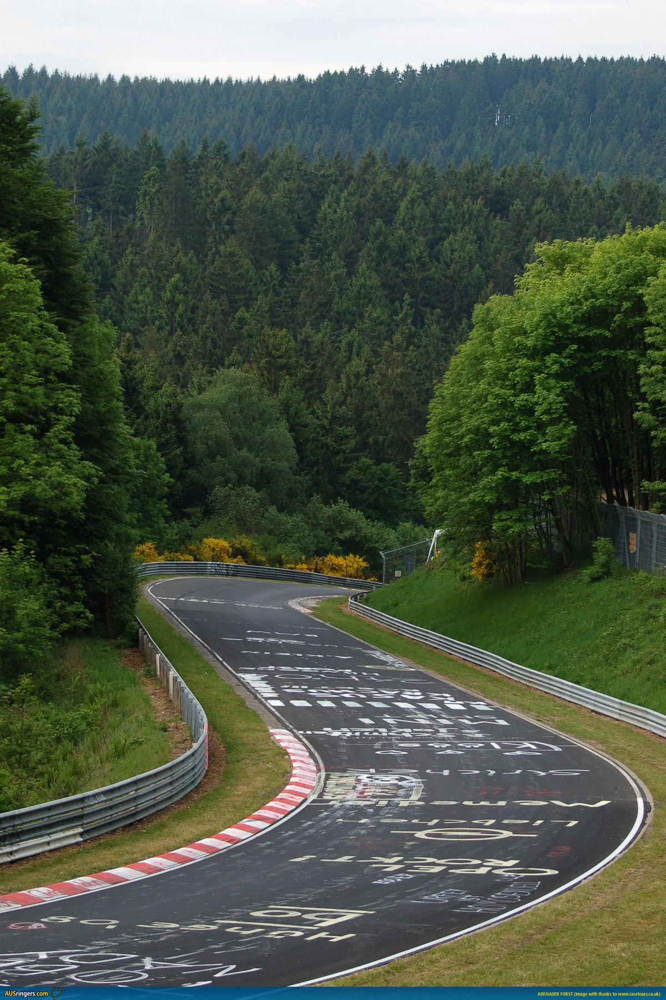
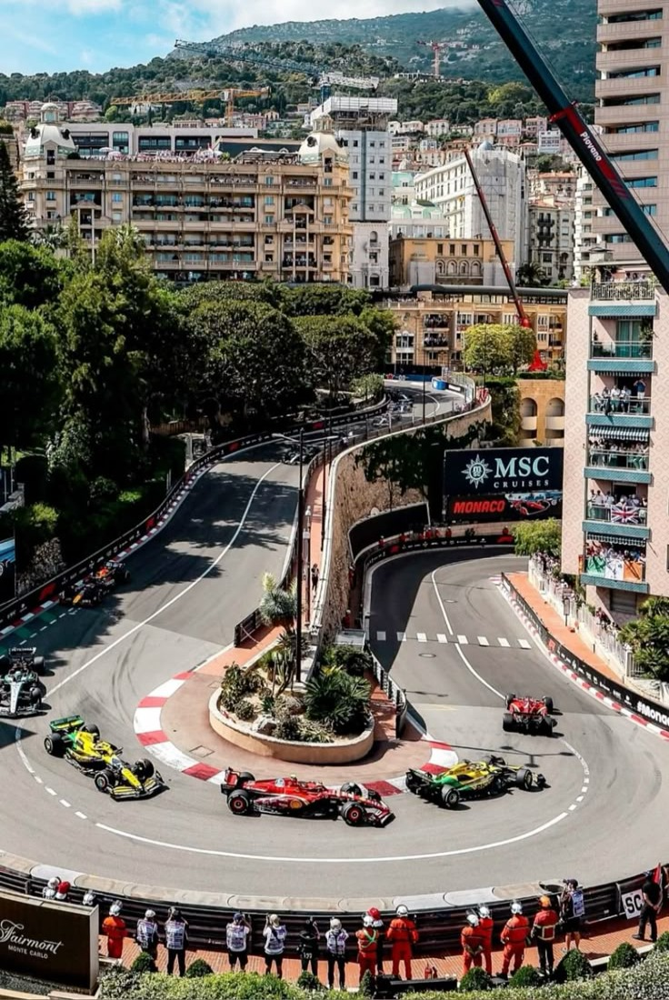
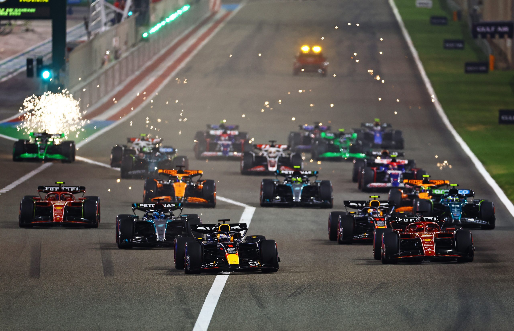

Circuit Nürburgring

La Formule 1, communément abrégée en F1, est une discipline de sport automobile considérée comme la catégorie reine de ce sport. Chaque année depuis 1950, un championnat mondial des pilotes est organisé, complété depuis 1958 par un championnat mondial des constructeurs automobiles. La compétition est basée sur des Grands Prix, dans lesquels des voitures monoplaces s'affrontent sur circuits fermés. Ces circuits sont parfois temporaires parce que tracés en ville, comme à Monaco, Singapour, et Bakou la plupart sont au contraire permanents comme Silverstone, Monza ou Suzuka. La Formule 1 allie technologie, stratégie et talent des pilotes.



La Formule 1 compte aujourd’hui plus de vingt Grands Prix répartis à travers le monde. Pourtant, certains
circuits dépassent le simple cadre sportif et sont devenus de véritables lieux mythiques, chargés d’histoire
et d’émotions pour les pilotes, les équipes et les spectateurs. Leur atmosphère unique, souvent liée à leur
ancienneté et à leur environnement, en fait des étapes incontournables du championnat.
Le Nürburgring, le Circuit de Monaco et le Circuit de Spa-Francorchamps partagent plusieurs points communs
qui justifient leur étude. Ce sont trois circuits historiques ayant accueilli les premières éditions du
championnat du monde de Formule 1 dès 1950. Ils sont également réputés pour leur difficulté et leur tracé
exigeant, qui mettent les pilotes à l’épreuve comme peu d’autres circuits dans le monde. Le Nürburgring,
surnommé « l’Enfer vert », est célèbre pour sa longueur et ses conditions imprévisibles. Monaco, avec ses
rues étroites, exige une précision extrême. Spa-Francorchamps, enfin, est reconnu pour ses virages rapides
et ses changements de dénivelé spectaculaires. Ces caractéristiques contribuent à forger leur légende et à
en faire des circuits particulièrement respectés dans l’univers de la Formule 1.
